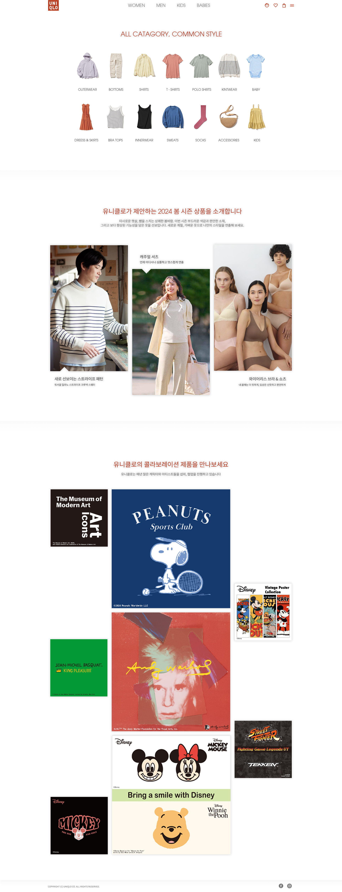

UNIQLO
Main + Sub Page RE-design
Design Tool
PhotoShop
Contribution
100%
Solo Proudct
Design Setting
Fonts
Avant Garde
Noto Sans KR
Colors
#222222

#B94430
Design Point
최근 트렌드에 맞춰 큰 이미지, 시원시원한 느낌을 살린 디자인입니다.
화려하고 멋진 느낌보다 브랜드 분위기에 맞춰 간결하고 기본적인 분위기를 살리되, 브랜드가 가진 붉은 색 포인트 컬러를 사용하는 방안으로 제작했습니다.
디자인 가이드를 제작하여 팀 작업 시 서체와 강조색을 고정시키고, 메뉴얼에 따라 협업 시에도 페이지 구성이나 전체적인 이미지가 바뀌지 않게 작업하였습니다.
강조색 선택 시 브랜드 로고에 사용된 선명한 빨강을 활용하고 싶었습니다.
그러나 기존 로고가 갖고있던 색은 채도가 높아 강조색으로 사용했을 때 집중이 분산되었습니다.
그렇기에 살짝 채도를 낮춘 #B94430를 강조색으로 활용했습니다.
사이트 이용시, 사용자의 시각 변환이 원활하게 될 것이라는 기대가 있습니다.
메인페이지 디자인 시 상단 네브바를 과감하게 없애고, 항목 섹션마다 메뉴를 호버시켜 넣는 방향으로 제작해보았습니다.
판매 항목이 많은 SPA브랜드 특성상 세부 항목을 너무 나눠두면 복잡해지는 게 느껴져서 깔끔하고 가벼운 느낌의 사이트를 디자인하려 노력했습니다.
Preview
